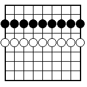
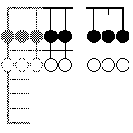

ST[1] .. Smart Go Board style: assigns letters a,b,... to the possible
sucessors of the current move.
ST[2] .. mgt style: mgt assigns letters to the possible
sucessors of the current move.
ST[3] .. xgoban style: xgoban assigns uppercase letters to variations of the
current move (variation marks).
Comment MM: In xgoban style, should clicking on a letter go to that move
(i.e. undo the current move, then execute move), instead of executing
a move as usual? What is the difference between SGB and mgt style?
It seems xgoban already supports both styles
Comment Antoine: BTW, don't xgoban do what you describe ? I was pretty sure it would.
Anders:
I don't like the STyle proposal, because it doesn't
really solve the
problem. In my opinion, the problem is that comments refer to points
on the board by using 'a', 'b', 'c', A, B, C, or even <triangle>: these
references depend on how the system on which those comments were
entered automatically generated letters on the board for the next moves
or for the alternate moves. That's a UI issue that should not affect
the file format.
I think a better solution would be to define an escape sequence
that can be embedded in comments to directly refer to points on the board.
It's then up to the UI to change the comment to refer to whatever
letter/number/
mark is displayed at that board point.
One proposal would be \'pp' where pp is any board point.
Comment MM: In theory, you are right. In practice, I doubt people would use it. Can one support it through the interface? Ideas? And we have already many commented games with hard-coded 'A', 'B', ... in at least two styles. STyle is intended as a patch to make these comments understandible for all.
comment Anders:
I also like the proposal by Dave Dyer on the properties for storing redundant
information. If he has a proposal for what properties are useful, these could
be added as optional properties.
Comment MM: True. Any ideas?
I don't say that properties are useless per se, but they are if not everybody can use them. In fact, the properties that have some utility for the average user are the one that everybody can see with any software. I would say there is a de facto core set which is the intersection of the ones that every public or commercial software (and no only viewers) implements. But this is probably not the best (i.e., more reasonable) one. Once again, with a big set of properties, the risk is to have files that comment on a special visual aspect of the board that the application is unable to render.
Comment MM: The set described here describes the status quo of Smart Go Board and Explorer. Which of the properties are too specialized to be in the general definition? Could someone propose such a partition into core/advanced? Could every author send a list of which properties are supported by his/her program?
I am willing to move more into the private SGB section,
if people don't need it. My current partition is just
a random starting point for discussion.
Comment Antoine:
Of course. This is how I understood it.
Antoine: It does not mean that extended sets could not exist. They would just be the place to put properties that a given program implement and wait for the others to implement later. I think the ST property should not only give a hint for the display style, but also for the extended set of property one is likely to find in the file. If xgoban finds ST[1], it will be glad to implement the SI property as you do (or map it into another one, warning the user that some information is lost), but I don't consider it is an essential property.
As a matter of fact, SI is a name for one of my private properties, and I won't change all my files because it has another meaning for files generated with another application. I prefer to select at read time between different possible sets of extended properties thanks to the ST property (or maybe XS = eXtended Set).
The advantage of a core set is that it will probably take less time before everybody agrees on it. And we can still leave the door open for extended sets.
Comment MM: Good point. I did not think about the redefinition problem before. Maybe all private properties could be different, e.g. three letters starting with P? To avoid the overlap problem. Of course this is also a bigger change and probably not worth it.
Comment Antoine: I don't think this will solve the problem. I am currently writing a go playing program. I have several files with privates properties, they are private because I won't share them right now. Suppose I am tired of Go programing (it could append within a few years) and I decide to make those files available for everybody. These properties will not be private anymore, they will only be part of one more extended set. Even if they have 3 letters and start with P, they could conflict with your private properties.
Comment MM: this should probably go into the style guide, e.g. how to present a problem without making the answer visible too early. Suggestions?
C[
1. An empty line indicates a paragraph break. \\
2. A newline indicates nothing. \\
3. A line ending in "\\" indicates a line break.
]
Comment MM: This is a frequent complaint, so we should do something. Anders has proposed '\n' I think, but I cannot find his mail... Should all whitespace characters (e.g. tab) in a text be converted into spaces? Should '\r' characters be filtered out?
From: Anders Kierulf , Mar 8 1995:
Within comments, we should allow \n for New Line. Also, I think it should
be allowed to break comments (maybe all text properties) into shorter
pieces, e.g.:
C[This is a very ]
[long comment.]
Or even:
C[This is a very ]
C[long comment.]
This would make SGF files easier to send over email, and should
not be hard for SGF readers to implement.
From: Antoine de Maricourt <dumesnil@etca.fr>, Feb 28, 1995
what about html like comments. They could be used for formating, or
more elaborated stuffs like 'click here to see solution' ... (cf
Pierce Wetter's remark above). We could also imagine some instruction
like 'playing at \var{2} is a bad move ...', that would expand into
'playing at D4 is a bad move' once formatted, if it turns out that the
variation 2 is at D4.
Not really easy to do :-)
Comment MM: True. Any ideas?
I think it's silly that:
Bigbear == Buffalo == B
This doesn't make sense to me. For me, it's acceptable to have a
verbose mode and a short mode, but both should be well defined:
Black == B
Comment MM: True. Should we do this?
(
C[Game start]
;B[point]
;W[point]
(
C[Subgame based on initial position with two stones]
;B[point]
# ...
)
C[game continues]
;B[point]
# ...
)
So instead of splitting the main branche into two sub-branches
(which one is the game, and which is the variation?) we let the
main branche proceed untouched and just create a side branch
(subgame). No confusion possible, right?
Comment MM: Oh no! RTFM
Comment MM: it seems the HA (handicap) property, in conjunction with RU (rules), could handle both chinese and japanese style handicap.
Comment MM: These new properties affect the display of the current position.
All points marked 'hidden' are not displayed, all 'dimmed' points are shown
greyed out. Compare the pictures below showing the same position
without and with dimmed and hidden properties.


Here is the SGF file for the second picture, with HN and DD properties:
(;GM[1]SZ[9]FF[4] AB[ac][bc][cc][dc][ec][fc][gc][hc][ic] AW[ae][be][ce][de][ee][fe][ge][he][ie] HN[fa][fb][fc][fd][fe][ff][fg][fh][fi][cg][dg][eg][gg] [ef][df][cf][ch][dh][di][eh][ei][ci][hg][gi][ii][ih][ig] [hi][gh][hh][if][hf][gf][gd][hd][id][hb] DD[aa][ab][ac][ad][ae][af][ag][ah][ai][bi][bh][bg][bf] [be][bd][bc][bb][ba][ca][cb][cc][cd][ce] )
What about more than 2 points for the view property, we could define one, two, ... boxes. Your example could be describes as : VW[aa][ee][af][bi][ga][ci][ge][gi]HN[hb]
Comment MM: Shall we keep it? It is not used in current Smart Go Board. The new 'hidden' property is a kind of replacement.
From: Antoine de Maricourt <dumesnil@etca.fr>, Mar 6, 1995
Concerning Berlekamp's diagram. What about an extension of HN and DD.
We could have HN[ae] to hide the full point. To hide partial point we
could use HN[ae:04], where the first number references the starting
line (0 = north line, 1 = north-east line, 2 = east line, .. until 7),
and the second number the number of consecutive 1/8 of stone that
should be hiden starting from the reference line and going clockwise.
HN[ae:04] would hide the half right part of the stone. We could do the
same for DD.
From: Antoine de Maricourt <dumesnil@etca.fr>, Mar 8, 1995
The trouble with my proposition for hiden points is that it
will not allow to hide (or dim) more than one part of the stone.
What about HD[ae:192], where the number ranges from 0 to 255 and
every bit corresponds to 1/8th of the stone. If the bit is set, the
corresponding part of the stone is hidden.
Comment MM: Yes in principle. The encoding seems a bit abstract.
why not label the parts 1,2,3,..?
Then it could go like HD[aa][ab][ac:1234] to hide the first two points
completely, and 4/8 of the third point
Reply Antoine:
Well, I just wondered what is the difference between ;AE[cb]B[ec] and
;AE[cb]AB[ec]. What about stones eventually captured by B[ec] ? Should
we remove them ? If no, why don't write AB[ec], for it has the same
meaning ? If yes, should B[ec] be played before AE[cb] or after ? I am
pretty sure I can build a diagram that will not be the same on two
given softwares.
Whatever are the answer to these questions, we could describe exactly the same diagram with only AE, AB and AW without trouble. My next argument is purely conceptual : I find it more regular (elegant ?) to have a type for each node, depending on the action that occured.
Also note that if we want to convert a SGF file to Ishi format, we must answer these questions and do the transformation I suggest.
Comment MM: Good points, need more discussion. Agree that B and W are special cases of AB and AW. The problem is what happens with illegal setups. Or if you capture stones with AB. Or setup an illegal repetition. etc. etc. I must check what SGB does, I'm not sure.
I will put it in style guide: do not mix moves and AddXX in the same node. Will this solve the conversion problem?
Reply Antoine:
We still have the answers the question of what to do with files that
does not respect the convention. Fortunately, the bad case is probably
rare, but who knows ...
Comment MM: A syntax and style checking program should be part of the spec. It could attempt to repair mildly damaged files. If this way we can clean the files on the servers, and all the writer programs, it would be a big step forwards.
Comment Antoine: This is a good idea. Yes. A really big step.
From: Anders Kierulf
I like the restriction that nodes cannot contain both AddBlack/White/Empty
and a move. If such nodes are read, they should be converted internally
into first a node with the Add... properties, followed by a node with the move.
(
;B[move1]
;W[move2]
(
;B[move4]
;W[move3]
;#1= B[move5] <- mark this node
...
)
(
;B[move3]
;W[move4]
;#1# <- this is not a new node, but the one that
is marked with the same number.
)
)
Comment MM: I like the idea, but would prefer to keep within current
syntax. I have something similar as Explorer private properties:
(
;B[move1]
;W[move2]
(
;B[move4]
;W[move3]
;B[move5] UniqueMark[1] <- mark this node
...
)
(
;B[move3]
;W[move4]
;TransPosition[1] <- this is a new node transposing into
the one that is marked with the same number.
If you come here, you can jump to the other node.
)
)
I keep the tree structure, so I have duplicate nodes. Somebody with
a general graph implementation could merge both into one node. Of course,
he/she must first define how to merge nodes.
Comment MM: I think only X[1] and X[2] should be allowed in the spec. Others as indicated above should be caught by the syntax checker and be converted or deleted (after a warning).
Comment MM: Can be replaced by KO property? Tim?